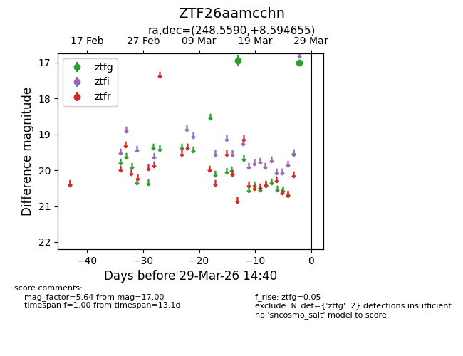
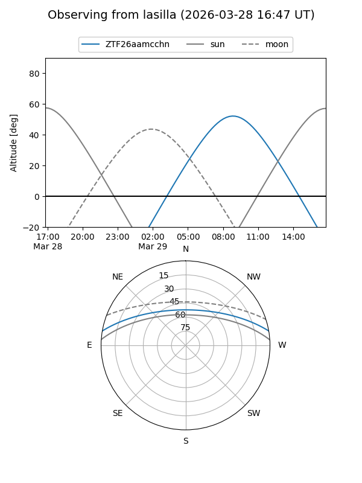
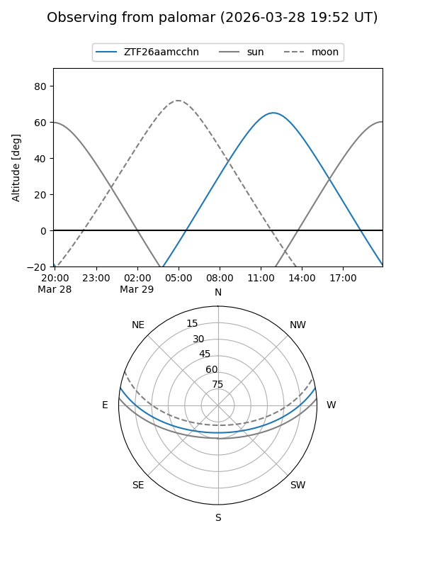

ZTF26aamcchn
Target ZTF26aamcchn at 2026-03-29 14:43
Aliases and brokers:
FINK: link
Lasair: link
ALeRCE: link
alt names
ZTF26aamcchn (ztf,fink_ztf)
Coordinates:
equatorial (ra, dec) = 248.5590,+8.59465
equatorial (HMS+DMS) = 16:34:14.17,+08:35:40.76
galactic (l, b) = (24.5006,+34.33627)
Flags:
Photometry:
last ztfg=17.00
2 ztfg detections
Lightcurve

Visibility


Additional plots